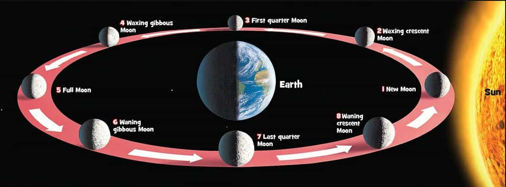

Why Does the Moon Change Shape?
Science · 4 min read

The moon appears to change shape because it moves around Earth while sunlight illuminates different parts of its surface. The moon doesnot produce its own light it reflects light from the sun. As the Moon orbits Earth, we see different portions of its sunlit side.
These different appearances are called the phases of the moon. The main phases include the new moon , crescent moon, first quarter, full moon and last quarter. During a full moon we can see almost entire illuminated side, while during a new moon the side facing earth appears mostly dark.
The moon takes about 29.5 days to compelete one full moon cycle of phases. It doesnot actually change its shape and Earth's Shadow is not responsible for its regular phases. Instead, the changing positions of the sun, Earth and Moon determine how much of illuminated Moon we can see from Earth.